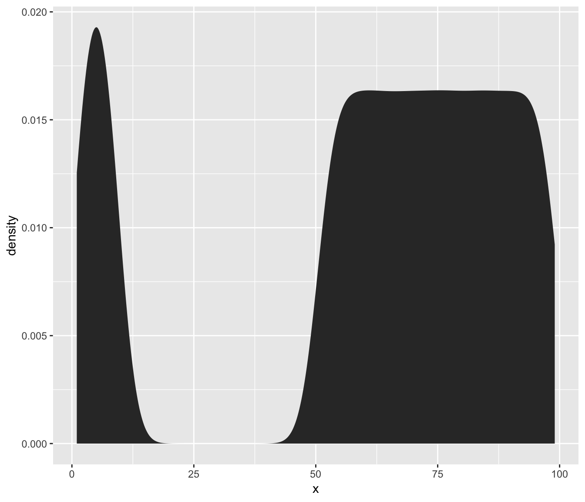

finding-thresholds.RmdMost of the examples from this package are centred around thresholding images, but really the core function auto_thresh() can be used to find thresholds for any non-negative integer data.
Let’s create a vector of values, most of which are greater than 50, the rest of which are less than 10:
x <- c(sample.int(9, 2e5, replace = TRUE), sample(51:99, 8e5, replace = TRUE))Now let’s take a look at the distribution of x:
library(ggplot2)
library(dplyr)
tibble(x = x) %>%
ggplot() + aes(x) + stat_density(bw = 3)
If you’re trying to threshold this sort of data, you’re probably looking for a method which will find a threshold that separates the larger values from the smaller ones. The available automatic thresholding methods are “IJDefault”, “Huang”, “Huang2”, “Intermodes”, “IsoData”, “Li”, “MaxEntropy”, “Mean”, “MinErrorI”, “Minimum”, “Moments”, “Otsu”, “Percentile”, “RenyiEntropy”, “Shanbhag”, “Triangle” and “Yen”. These are well demonstrated at http://imagej.net/Auto_Threshold.
“MaxEntropy” and “Yen” often fail to find a threshold, so I generally avoid them. Let’s try out all the rest.
library(autothresholdr)
thresh_methods <- c(
"IJDefault", "Huang", "Huang2", "Intermodes", "IsoData",
"Li", "Mean", "MinErrorI", "Minimum", "Moments", "Otsu",
"Percentile", "RenyiEntropy", "Shanbhag", "Triangle"
)
thresholds <- purrr::map_chr(thresh_methods, ~auto_thresh(x, .)) %>%
tibble(method = thresh_methods, threshold = .)
print(thresholds)
#> # A tibble: 15 x 2
#> method threshold
#> <chr> <chr>
#> 1 IJDefault 39
#> 2 Huang 8
#> 3 Huang2 8
#> 4 Intermodes 40
#> 5 IsoData 38
#> 6 Li 24
#> 7 Mean 59
#> 8 MinErrorI 59
#> 9 Minimum 33
#> 10 Moments 55
#> 11 Otsu 8
#> 12 Percentile 67
#> 13 RenyiEntropy 69
#> 14 Shanbhag 69
#> 15 Triangle 10Now, which of these selected a threshold between 10 and 49?
filter(thresholds, threshold >= 10, threshold <= 49)
#> # A tibble: 6 x 2
#> method threshold
#> <chr> <chr>
#> 1 IJDefault 39
#> 2 Intermodes 40
#> 3 IsoData 38
#> 4 Li 24
#> 5 Minimum 33
#> 6 Triangle 10The other methods aren’t necessarily wrong, they’re just more strict or more lax than these ones. For thresholding microscopy images to remove background, my favourite method is “Triangle” because it is fast and quite conservative in that anything even slightly above background is kept.
auto_thresh(x, "tri")
#> [1] 10
#> attr(,"ignore_black")
#> [1] FALSE
#> attr(,"ignore_white")
#> [1] FALSE
#> attr(,"ignore_na")
#> [1] FALSE
#> attr(,"autothresh_method")
#> [1] "Triangle"
#> attr(,"class")
#> [1] "th" "integer"
auto_thresh(x, "otsu")
#> [1] 8
#> attr(,"ignore_black")
#> [1] FALSE
#> attr(,"ignore_white")
#> [1] FALSE
#> attr(,"ignore_na")
#> [1] FALSE
#> attr(,"autothresh_method")
#> [1] "Otsu"
#> attr(,"class")
#> [1] "th" "integer"